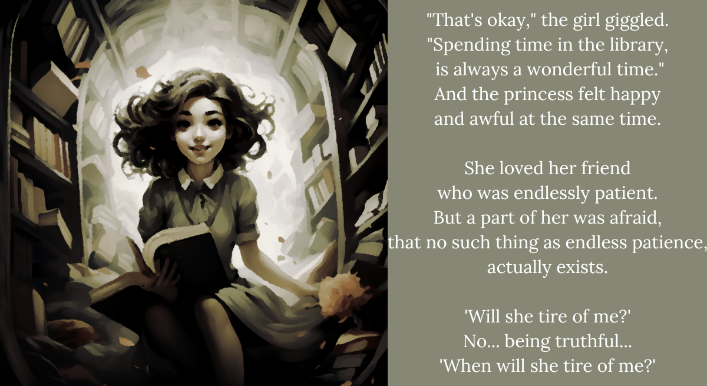

BBB4. The princess and the girl decide to stay in the library

There it was.
That fear that haunts hearts,
of both children and grown-ups.
The fear that in friendship,
just as in the rest of the world,
there is no such thing as equal.
It nestled in a small corner of her heart,
like termites planning their great feast.
Because the worst fears infest your heart,
and back then, there wasn’t Spray Away.
It was quiet,
and that’s what makes it scary
to the keen observer.
The days passed happily,
as the princess learned of new worlds.
There were dragons here,
and there were little bugs there!
Little bugs called parasites,
that did quite nasty things if
you let them into your body.
Truthfully, the princess was not always
happy to hear about parasites!
But it healed her soul to listen
to her best friend talk.
Even if it was about things laying eggs
in places they really shouldn’t be laying eggs.
If only time could stay still here,
it would be the happiest of endings.
But we all know time never does that.
Not unless it’s broken.
And if time starts staying still,
that’s actually a bigger problem.
One day, as the clock
was moving forward a little too slow,
and the princess was sneaking through the hallway,
a little too slow herself,
the queen, her stepmother, stopped her.
“Just where are you going, my daughter?”
she demanded.
The princess was only ever her daughter
when she was angry, you see.
“I’m furthering my princess education!”
the princess said, which was a mistake,
because it was already a little too articulate,
for the queen’s tastes.
“Goodness! This smart little girl,”
the queen said snidely. “My daughter,
perhaps you’re clever enough to know!
There have been rats infesting this castle lately.
Little rats that know too much,
and that think too much as well.
Have you heard their squeaks?
They sound quite craven,
especially when they starve to death,
on sticky resin.
Oh, you’d know if you heard them,
so be on your way,” and she smiled,
saying nothing else.
And because the princess was no fool,
she knew.
That morning, as she waited for her best friend,
she thought that her heart would stop,
for fear her friend would be caught.
When she finally came, the princess hugged her,
and said: “Please! You have to leave!”
There was no time to explain,
except for sparse words.
“My mother! It’s my mother!
Please! She’ll hurt you!
She’ll kill you!
Please, just never come here again,” she begged,
to her bewildered friend,
who had barely gotten in a hello.
And because she was panicking,
she sent her friend past the gate,
when no one was looking,
and never gave her a real goodbye.
That’s it? This one… really stings, actually. I don’t have any words.
The worst part about it is that the door opens. As if there was something valuable about that crummy ending. Of course the two of us aren’t saying anything. There’s nothing to say, because it’s just gonna drown in the bitter gloom that follows a stupid sad story.
It’s a full-on stroke of luck that she’s holding Yorick right now, because Shiori is taking the ending really badly. I mean, legit, I am too. Even for sensitive me, this is a new one for how much a piece of fiction leaves a bad taste in my heart. But I guess it makes sense for who Shiori is that it would hit her even worse.
“Shiori… are you okay?”
“Huh?” she’s startled, even though I’ve been right next to her for a while now. She’s hugging Yorick to herself, and Yorick’s sweetly cuddling against her chin. “I’m… sorry. It reminds me of something. And really, if anyone should be… no, no. Nevermind. Forget that. Um, are you okay?”
“I’m okay. I’m okay right now.”
Even though I’m really bad with touch, I don’t feel so strange hugging her right now. I want her to be okay. And I don’t miss a little bit of sniffling on her end.
“Well… well! We’ve finally reached the cellar! It’s been such an odyssey, hasn’t it?” she trumpets up whatever little bravado she has. “Are you ready?”
Yeah. I’m ready. Let’s go and leave this place together.
ENDING 4 REACHED: The Princess and the Bookworm
You’ve reached the Cellar. GO TO: The Cellar Entrance ZZZ